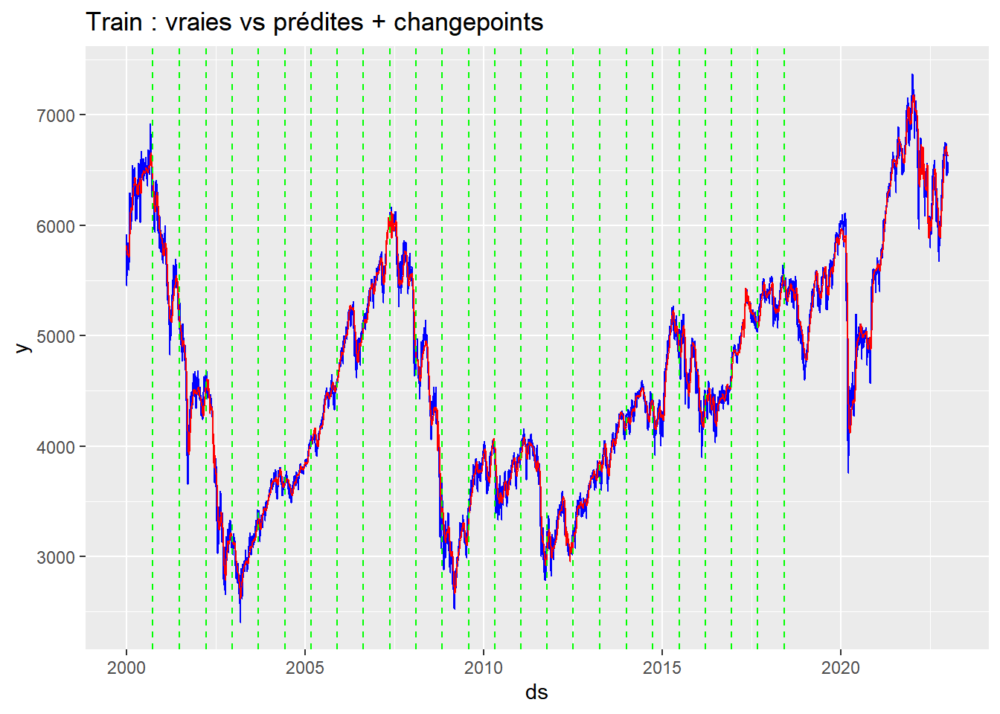

Ce rapport présente une modélisation complète du CAC40 à l’aide du modèle Prophet.
Après un nettoyage rigoureux de la base de données, l’analyse porte sur : - la structure temporelle du CAC40, - la gestion des valeurs manquantes, - la pertinence d’un modèle additif, - l’intégration de variables exogènes (macroéconomiques et techniques), - l’ajout d’événements calendaires majeurs, - l’évaluation de la performance du modèle.
1. Chargement des données
library(ggplot2)library(quantmod)
Loading required package: xts
Loading required package: zoo
Attaching package: 'zoo'
The following objects are masked from 'package:base':
as.Date, as.Date.numeric
Loading required package: TTR
Registered S3 method overwritten by 'quantmod':
method from
as.zoo.data.frame zoo
library(dplyr)
######################### Warning from 'xts' package ##########################
# #
# The dplyr lag() function breaks how base R's lag() function is supposed to #
# work, which breaks lag(my_xts). Calls to lag(my_xts) that you type or #
# source() into this session won't work correctly. #
# #
# Use stats::lag() to make sure you're not using dplyr::lag(), or you can add #
# conflictRules('dplyr', exclude = 'lag') to your .Rprofile to stop #
# dplyr from breaking base R's lag() function. #
# #
# Code in packages is not affected. It's protected by R's namespace mechanism #
# Set `options(xts.warn_dplyr_breaks_lag = FALSE)` to suppress this warning. #
# #
###############################################################################
Attaching package: 'dplyr'
The following objects are masked from 'package:xts':
first, last
The following objects are masked from 'package:stats':
filter, lag
The following objects are masked from 'package:base':
intersect, setdiff, setequal, union
La base de données contient : - des indicateurs macroéconomiques (inflation, chômage, PIB…), - des indicateurs techniques (SMA, WMA, momentum…), - des indices étrangers (US unemployment, US rates…), - le prix de clôture du CAC40.
Ces variables seront utilisées pour capturer les dynamiques sous-jacentes de marché.
2. Visualisation du CAC40
close_df$Date <-as.Date(close_df$Date, "%Y-%m-%d")ggplot(close_df, aes(Date, Close)) +geom_line(color="blue") +labs(title="Prix de clôture du CAC40", x="Date", y="Close") +theme_minimal()
Le graphique met en évidence : - une tendance haussière de long terme,
- des périodes de forte volatilité (crises financières, COVID, tensions géopolitiques),
- des cycles de marché qui justifient l’usage d’un modèle flexible comme Prophet.
3. Analyse des valeurs manquantes
library(naniar)vis_miss(close_df)
Les données révèlent : - une forte proportion de valeurs manquantes dans IRCB_us (taux interbancaire US).
Cette variable étant importante pour capturer les conditions monétaires américaines, son imputation est cruciale.
4. Corrélations et justification de l’imputation ( facultatif car Prophet gère très bien les valeurs manquantes)
Commentaire :
L’imputation par arbre (CART) est pertinente ici car : - elle capture les interactions non linéaires, - elle est robuste à la multicolinéarité, - elle respecte la structure complexe des variables macro-financières.
6. Vérification de l’adéquation d’un modèle additif
Prophet est un modèle additif.
On vérifie si la série peut être raisonnablement modélisée comme :
tendance + saisonnalité + effets spéciaux + bruit
La méthode du test des bandes (minima / maxima annuels) permet d’évaluer si la structure est compatible.
Call:
lm(formula = Close ~ as.numeric(Year) * Type, data = annual_min_max_df_long)
Residuals:
Min 1Q Median 3Q Max
-1751.7 -884.3 -175.0 641.4 2600.5
Coefficients:
Estimate Std. Error t value Pr(>|t|)
(Intercept) -179694.95 61533.41 -2.920 0.00540 **
as.numeric(Year) 92.01 30.58 3.008 0.00425 **
TypeMinima -10347.89 87021.38 -0.119 0.90586
as.numeric(Year):TypeMinima 4.51 43.25 0.104 0.91740
---
Signif. codes: 0 '***' 0.001 '**' 0.01 '*' 0.05 '.' 0.1 ' ' 1
Residual standard error: 1103 on 46 degrees of freedom
Multiple R-squared: 0.4368, Adjusted R-squared: 0.4001
F-statistic: 11.89 on 3 and 46 DF, p-value: 6.867e-06
Résultat :
Les pentes ne sont pas significativement différentes → la tendance est cohérente → modèle additif adapté.
7. Séparation Train/Test
train <- close_df |>filter(Date >="2000-01-01", Date <="2022-12-31")test <- close_df |>filter(Date >="2023-01-01", Date <="2024-10-30")
8. Définition des événements calendaires
Les marchés boursiers réagissent fortement à : - élections présidentielles, - élections législatives, - réunions majeures, - crises financières, - jours fériés.
Ces événements sont intégrés dans Prophet :
library(lubridate)
Attaching package: 'lubridate'
The following objects are masked from 'package:base':
date, intersect, setdiff, union
library(timeDate)special_events <-data.frame(ds =as.Date(c("2002-04-21", "2002-05-05", "2007-04-22", "2007-05-06","2012-04-22", "2012-05-06", "2017-04-23", "2017-05-07","2002-06-09", "2002-06-16", "2007-06-10", "2007-06-17","2012-06-10", "2012-06-17", "2017-06-11", "2017-06-18","2008-09-15", "2022-04-10", "2022-04-24", "2022-06-12", "2022-06-19")),event =c("1er tour présidentielles 2002", "2e tour présidentielles 2002", "1er tour présidentielles 2007", "2e tour présidentielles 2007", "1er tour présidentielles 2012", "2e tour présidentielles 2012", "1er tour présidentielles 2017", "2e tour présidentielles 2017", "1er tour législatives 2002", "2e tour législatives 2002", "1er tour législatives 2007", "2e tour législatives 2007", "1er tour législatives 2012", "2e tour législatives 2012", "1er tour législatives 2017", "2e tour législatives 2017","Faillite de Lehman Brothers", "1er tour présidentielles 2022", "2e tour présidentielles 2022", "1er tour législatives 2022", "2e tour législatives 2022"))special_events_prophet <- special_events %>%mutate(holiday = event, lower_window =-7, # 7 jours avant l'événementupper_window =7# 7 jour après l'événement )# Jours fériés pour les USA entre 2000 et 2022us_holidays <- timeDate::holidayNYSE(2000:2022) # Jours fériés pour les USA# Convertir les jours fériés en format dateus_holidays_df <-data.frame(ds =as.Date(us_holidays), # Convertir les jours fériés en Dateholiday ="US_Holiday"# Nom des jours fériés)# Combiner les jours fériés et les événements spéciauxholidays_combined <-bind_rows(special_events_prophet, us_holidays_df)
Notre intuition est la suivante :
- Les élections génèrent incertitude → volatilité → répercussions sur les marchés.
- La faillite de Lehman Brothers est un choc majeur → doit absolument être explicitement modélisée.
9. Construction du modèle Prophet
m <-prophet(holidays = holidays_combined,yearly.seasonality =TRUE,weekly.seasonality =TRUE,changepoint_prior_scale =0.05,seasonality_prior_scale =10,interval_width =0.95)
Warning in scale_x_datetime(): A <numeric> value was passed to a Datetime scale.
ℹ The value was converted to a <POSIXct> object.

Composantes du modèle de prophet
prophet_plot_components(m, forecast_train)
Warning: `aes_string()` was deprecated in ggplot2 3.0.0.
ℹ Please use tidy evaluation idioms with `aes()`.
ℹ See also `vignette("ggplot2-in-packages")` for more information.
ℹ The deprecated feature was likely used in the prophet package.
Please report the issue at <https://github.com/facebook/prophet/issues>.